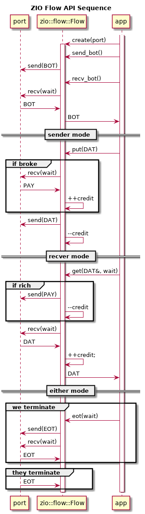

ZIO data flow
Table of Contents
ZIO data flow protocol is a layer on top of basic ZIO ports. It provides for one-way transmission of application-dependent payload messages between two ports with additional guarantees (requirements) beyond those that are provided by ZIO ports (and their underlying ZeroMQ sockets). These guarantees include:
- The ZeroMQ sockets are CLIENT/SERVER pairs.
- In any given flow, payload message transmission is unidirectional (eitehr CLIENT to SERVER XOR vice versa).
- The total number of messages buffered during the transmission by the sockets at both endpoints combined will not exceed a given maximum.
- The
seqnofield in a ZIO message is strictly incremented on send.
Some of the benefits of these guarantees (some might call them restrictions or limitations) are described in the section of the ZeroMQ guide covering credit-based flow control.
1 Flow protocol
The ZIO data flow protocol is partly illustrated in the UML sequence diagram. The protocol has two phases: initiate and transfer.

Initiate starts with the client sending a begin-of-transmission (BOT) message and the server responding with another BOT. Both required these attributes: direction gives the flow direction (see below) of the flow from the point of view of the message sender and credit gives the number of credits in play in the protocol
The direction is one of two values: extract means the endpoint will send payload data and inject means the endpoint expects to receive payload data.
The server receives the client's BOT and in forming its reply BOT shall reverse the direction field and may adjust the number of credits downward. The client receives the reply and shall accept the number of credits as the total in play for transmission phase.
Note, choice of this number requires some trial. Increasing it will, to a point, reduce latency effects that will degrading throughput. Increasing it will also increase memory usage in the endpoints as well as latency to perform any synchronization, such as at shutdown.
Alternatively (and not shown in the diagram) the server may immediately respond with end-of-transmission (EOT) if the request is rejected.
Transfer phase of the protocol has a mirror symmetry under exchange of flow direction. If the client BOT specifies the extract direction then the client side is sender of payload messages, else it is the server side. The end which is not the sender is the recver. These terms describe the direction of DAT messages and PAY messages are sent in the opposite direction (sender receives PAY). Like BOT, EOT travel both directions.
Regardless of the direction the transfer phase starts out by the recver sending a number of credits in a PAY message and decrementing the number of held credits by an equal amount. The recver may send subsequent PAY messages anytime it posses credit and may send any amount up to and including the amount currently held. A recver credit is replenished one unit for every DAT message received.
The sender may send payload DAT message at any time it has credit. Each DAT message depletes the credit held by the sender by one unit and each PAY replenishes credit in the amount indicated in the message.
At any point in time, either endpoint may explicitly terminate the transmission by sending an EOT. If EOT is received, an endpoint shall acknowledge the termination by echoing back an EOT. In the illustration, the client initiates termination. This EOT is sent quickly after two DAT messages for which the server has yet to respond. Thus, the client will receive subsequent PAY messages prior to the EOT acknowledgment. In order to assure all buffers on both ends are flushed, it is important for the issuer of an EOT to continue receiving until that EOT acknowledgment arrives and give a chance for the application to process any DAT that may have arrived, if the endpoint is a recver.
In real world applications the protocol may be interrupted at any
time. It provides no in-band support for handling interruptions other
than what may be provided by ZeroMQ. Using finite timeout with ZIO
flow protocol an application may consult a zio::Peer to determine if
the other end is still online or not.
2 Flow messages
ZIO data flow introduces a new ZIO message of type FLOW. This message
type has no meaningful "level" and so it is set to
zio::level::undefined (0). The payload frames of a FLOW message are
unused by the ZIO data flow protocol and are available for application
use. The protocol is implemented using the label field of the ZIO
message prefix header. This field shall hold a string representing a
JSON object which is here called the flow object.
A flow object shall always have an attribute named flow the value of which defines a (sub) message type in the data flow protocol. Any FLOW message lacking this attribute may be dropped. The flow attribute may hold a value of: BOT, EOT, DAT or PAY. Depending on the value, additional attributes may be required or optional. The meaning of these (sub) message types and their associated attributes are described:
- BOT
- begin-of-transmission, the flow object has attribute
.directionset to"extract"or"inject"and.creditset to an integer. - EOT
- end-of-transmission, either side may send, receiver should echo back. No associated attributes.
- PAY
- credit is extended from one endpoint to another as given in
the
.creditattribute (singular) with a whole number value. - DAT
- the message payload holds an application specific encoded message and no additional attribute is associated.
The application may augment the flow object with additional attributes and is free to fill the payload frame or frames of any FLOW message.
3 Flow API
ZIO provides an API to simplify developing software that participates
in a ZIO data flow protocol. The central API class is
zio::flow::Flow. A Flow may be used as either a sender or a recver.
Constructing a Flow accepts a port which may be either a CLIENT or
SERVER port with the only distinction being that the port is a CLIENT,
the application must assume it initiates the protocol. The following
UML sequence diagram illustrates this protocol from the point of view
of a Flow with a CLIENT socket.

A zio::flow::Flow is created with a zio::Port by an application.
The port should be brought online prior to any Flow method calls.
If the Flow object has a CLIENT socket the application must first
call send_bot() and then recv_bot() and the reverse if it has a
SERVER.
Based on the .direction attribute of the flow object of the BOT
message, the object will be either in sender or recver mode. The
application may call is_sender() to determine which (although the
app should also know this as it provides the initial BOT content).
The sequence for each mode is shown in the UML sequence diagram.
After the BOT handshake and depending on mode the application may
then call the methods put() (sender mode) or get() (recver
mode) in order to exchange DAT messages. Proper mode operation may
be asserted. These calls are synchronous to the app and internally
they participate in asynchronous communication with the. In
particular, both may recv() messages from the port. If a recv()
returns and EOT (instead of the expected PAY or DAT) these
methods return false. The application should check this return and
call send_eot(), possibly with a zero timeout, to issue a reply.
This interrupting EOT will arise because either end may call
send_eot() at any time. When explicitly initiating an EOT in this
manner that side should also call recv_eot() to wait for the ack from
the interrupted side. While doing so, a number of PAY (if sender) or
DAT (if recver) messages may arrive as credit is drained and before
the reply-EOT is received. These last messages are not required to be
serviced for the flow protocol and may be processed or discarded by
the application.
4 Simple Flow Server
A data flow server may be directly implemented using an instance of
zio::flow::Flow by simply giving it a zio::Port with a SERVER
socket. Note, in such a case the application must first call
recv_bot() and then send_bot() in opposition to the UML sequence
diagram above. As always, the conversation must start with the client
Flow.
Using a Flow to directly implement a server limits it to only
correctly interacting with a single client during any given
transmission. An attempt by a second client to communicate may be
ignored or cause interruption of the protocol. However, a
multi-client server can be constructed which utilizes a per-client
handler with each handler using a distinct Flow instance.
5 Extending Flow API
As mentioned above, the flow object stored in the header prefix
label field and the payload may be used by the application. The
.direction and .credit attributes of the flow object are
reserved by the protocol but application specific attributes may be
included and will be passed through the protocol. Likewise, the
entire payload of the flow messages is passed
through and at the disposal of the application. This is true for
BOT, DAT and EOT messages. However the PAY messages are not
exposed to the application via the zio::flow::Flow API.